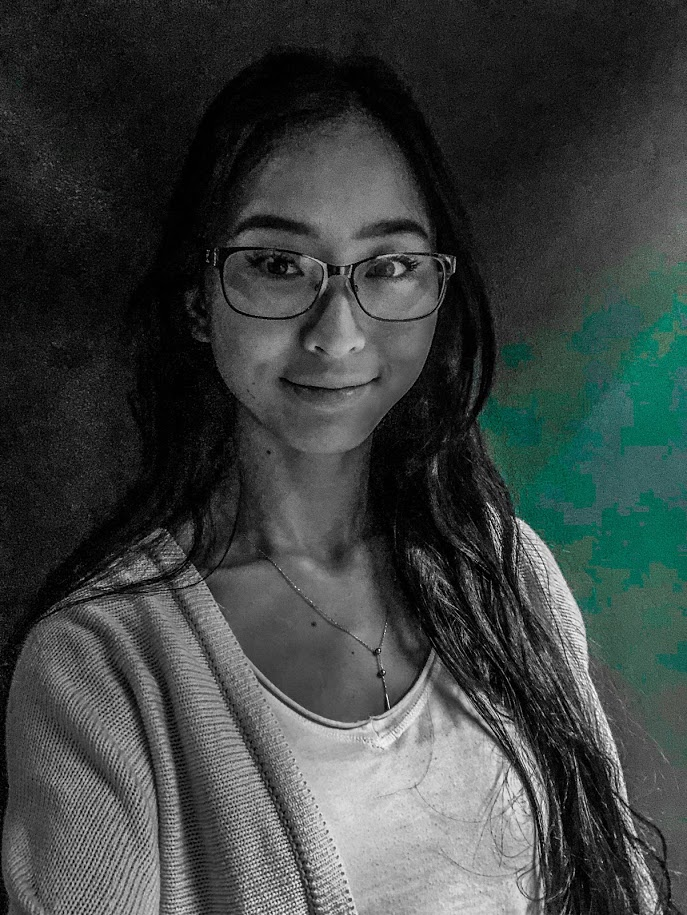

About Me

Boise--the land of potatoes--is where I am from. My parents moved here from Cambodia before I was born and we ended up moving to Seattle where I've spent the majority of my life. I grew up with two older brothers and enjoyed playing soccer and listening to music in my freetime.
I recently graduated from the University of Washington in Seattle with a degree in Geographic Information Systems (GIS). I currently love hiking, going to concerts, and eating good FOOD.
In my portfolio you will see pictures of my favorite foods but it will be updated with my projects as they come.
Currently I am aspiring to be a Full Stack Developer. Stay tuned..